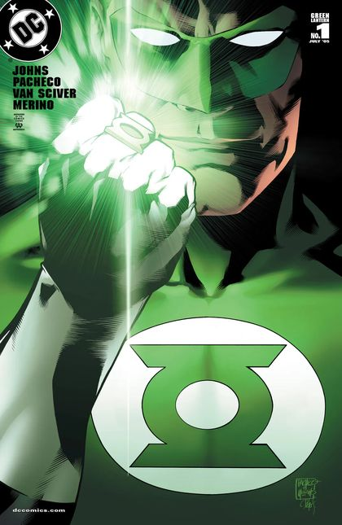

Reading Order
Green Lantern vol. 4 #1–25
The road to war — Sinestro's shadow lengthens.

2005 – 2007
Collected in Green Lantern by Geoff Johns Omnibus Vol. 1.
The story
Two years of build-up, and every issue tightens the screws. Hal rebuilds his life, the Corps finds its footing — and in the background, Sinestro is building something terrible.
This run is where the modern Lantern mythos takes shape: the other colors are foreshadowed, old enemies return, and the stage is set for the saga's first peak. Don't skip it — the payoff assumes you've been here.
Key characters

Green Lantern (2005) #1 — Alex Ross variant cover. Alex Ross (painted variant cover art). Artwork source & details.
Artwork credits (3 images)
Credits refer to the illustrations shown here. Open a record for sources, adaptations and unresolved details. Some artwork and source pages contain story spoilers.
- Gl1 — Green Lantern (2005) #1 — Alex Ross variant cover. Alex Ross (painted variant cover art).
- Hal Jordan — Hal Jordan and the Green Lantern Corps #45 (2018), Tyler Kirkham variant cover, cropped detail. Tyler Kirkham (cover pencils and inks); Arif Prianto (cover colors).
- Sinestro — Artist credit unconfirmed.